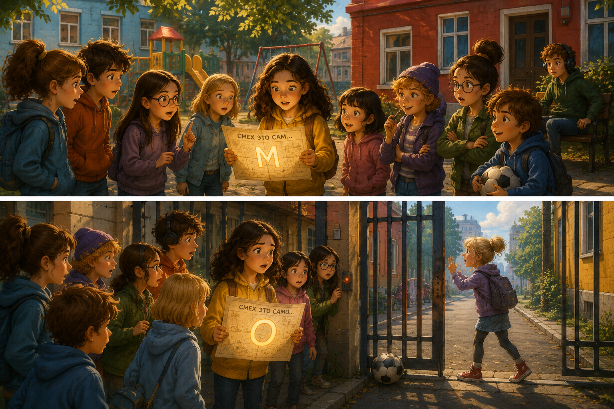

Приключения Истины в Нижнем Новгороде
Глава 15. Утро одного сна
Утром двор выглядел так, будто ночью ничего не было. Горки стояли на месте. Качели молчали. Лавка у красного дома грелась на солнце и делала вид, что вообще не умеет хранить тайны.
Истина вышла с картой в кармане. Карта была тёплая.
— Мне приснилась ерунда, — сказала Саша, появившись у площадки. — Синий двор, окна светятся, и ты стоишь такая важная.
Истина остановилась.
— Мне тоже.
Из голубого дома вышла Полина.
— И мне. Там от окон тянулись ниточки.
Вика поправила очки.
— А между горками была буква М.
Лёва, который сидел у лавки и делал вид, что слушает музыку, нахмурился.
— Я вообще спал. Но мяч там тоже был.

Яша прижал мяч к боку.
— Мой мяч без меня во сны не ходит.
Карта сама выскользнула из кармана Истины. На ней светилось:
СМЕХ ЭТО САМ...
— Значит, М настоящая, — сказала Маша.
— Конечно настоящая, — сказала Ручка. — Я это сразу поняла.
— Ты вчера спала, — напомнила Оливия.
— Великие люди понимают во сне, — сказала Ручка.
Ластик стояла рядом с Ручкой и смотрела на вход номер два между красным и жёлтым домом.
— А может, следующая буква там, — сказала она. — Ворота похожи на большую букву.
— На какую? — спросила Саша.
— На важную.
Ручка сразу пошла к воротам. Ластик побежала за ней. Остальные тоже двинулись следом, но не спеша. Только Яша покатил мяч перед собой.
Ворота были закрыты. За ними виднелась дорожка и кусочек улицы. Ручка просунула руку к кнопке и сказала:
— Смотрите, сейчас будет кадр.
Ворота щёлкнули.
Ручка осталась во дворе. А Ластик, которая шагнула вперёд слишком быстро, оказалась с другой стороны.
— Эй, — сказала она. — Откройте.
Ручка нажала кнопку ещё раз. Ничего.
Ластик засмеялась.
— Очень смешно. Открывайте.
Но смех у неё получился тонкий. Не смешной.

Карта раскрылась в руках Истины. На плане двора вход номер два загорелся круглым кольцом. Кольцо стало буквой:
О
— Есть буква, — прошептала Полина.
И в этот момент Яшин мяч медленно покатился к воротам. Он стукнулся о нижнюю щель и застрял там, где ворота должны были открыться.
Карта дописала:
СМЕХ ЭТО САМО...